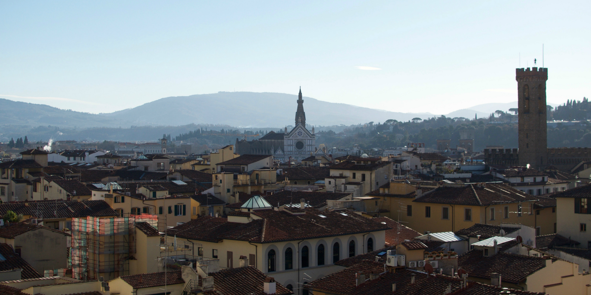
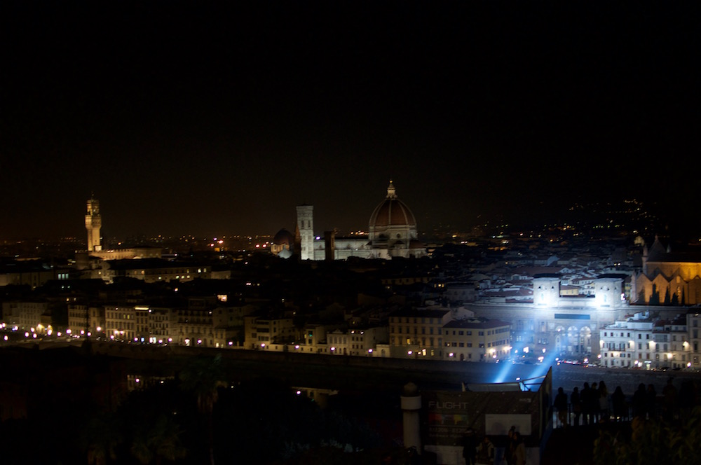
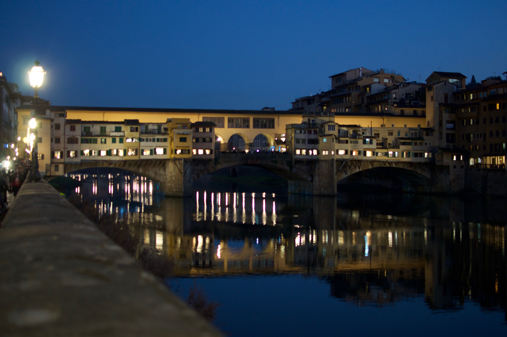
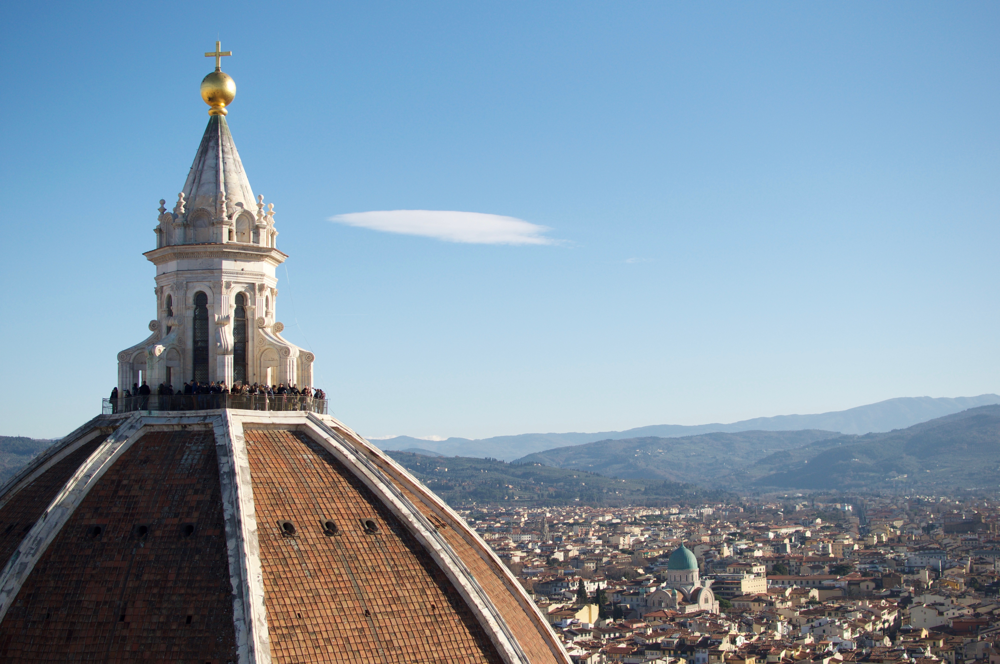
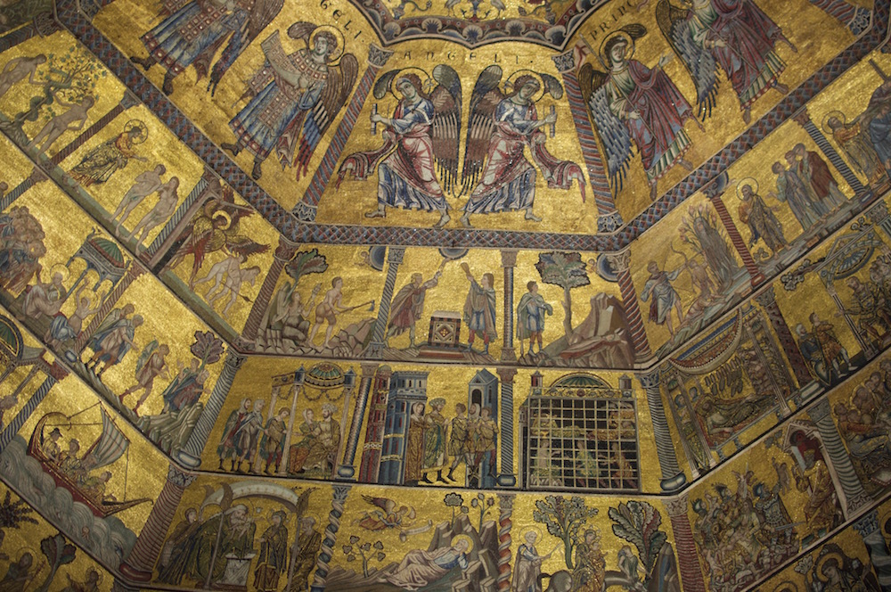

Florence

A contender for one of the most beautiful cities I have seen, it reminds me a lot of Prague. It had been on my ever-expanding bucket list for quite some time so as you can imagine my expectations were high. I wasn't disappointed. Florence is fascinating and incredibly beautiful, with an architectural masterpiece around every corner, coordinating colour scheme with terracotta roof tiles and full to the brim with priceless works of art.
We flew to England over Christmas to spend time with my family and decided to take advantage of the cheap Ryanair flights to Milan between Christmas and New Year. My parents, my husband and two of our friends were all on board for a trip to Italy. The six of us flew into Milan and spent a quick 24 hours sightseeing before moving on to Florence. There are hourly high-speed trains linking Milan and Florence and for about 60 euros each way, the direct train takes an hour and a half. You can catch a few glimpses of the scenic Lombard and Tuscan countryside between gaps in the walls and tunnels.
Our google map all pinned with various sights, restaurants and bars suggested by friends, we arrived in Florence. For our accommodation, we opted for renting an apartment through Airbnb, costing us only €30 each person per night. With just a five-minute walk from the train station to the apartment, we met our friendly host and were checked in by 5.30pm. We didn't have a full day in Florence, just two evenings and the final day until 2pm, but we still managed to do and see a lot. Luckily the major sights are all in walking distance so little time is wasted hurrying sight to sight.
Sights
The first evening we saw many of the main sights during the 30-minute walk to Piazzale Michelangelo. It is a large hilltop platform with arguably the best views of the city. The sun had set by the time we arrived, though luckily the city was well lit. However, I think it would have been nice to see the view during daylight hours also. During December, there were several light installations throughout the city for the F-light festival. One of these installations was a large beam of light from the Piazzale Michelangelo hitting the National Library in memory of the flood in 1966, where sadly much of the library's collection was damaged.

View from Piazzale Michelangelo.
The symbolic bridge in Florence, Ponte Vecchio is truly impressive at both night and daytime. This old bridge remarkably survived World War II and since the 13th century there have been shops on it. Today there are only jewellers, which has apparently been the case since 1593. The bridges either side and the streets along the side of the river are full of tourists attempting to get the perfect full shot of Ponte Vecchio and its reflection in the water. There are many hold ups on the bridge with people stopping to take photos and in the middle there is a bust of Benventuto Cellini, who was an Italian goldsmith and sculptor.

Ponte Vecchio.
Porcellino (bronze boar statue) is at Loggia del Mercato Nuovo and is a popular tourist attraction. For wishes to come true, we rubbed the boar's nose, placed a coin in its mouth and willed the coin to fall into the underlying grate. Mine missed so I guess world poverty won't be ending.
As Florence is a very popular tourist destination, be prepared to do a considerable amount of queuing and if you have limited time buying the more expensive tickets in advance or better still investing in the Firenze card will avoid disappointment. The reserved ticket holders were still queuing in a shorter line but the €72 Firenze card allows for queue jumping; word of warning you still need to make reservations for the cathedral dome. We got up very early one morning and were the first in line for tickets at the Piazza del Duomo (cathedral square) to find out that the tickets for the cathedral had completely sold out for the following few days. Fortunately, Giotto's Campanile (bell tower) and the Baptistery were still available. The bell tower is almost as tall as the cathedral's dome and we told ourselves that it's better to see and take pictures of the dome, so we weren't too disappointed. It would have been wonderful to have got admittance in to see Vasari's fresco of the Last Judgement, a good excuse to return someday. We could at least see the beautiful facade of the cathedral.
Going inside the Giotto's Campanile (bell tower) had to suffice for this trip. There are 414 steps to the top with three levels for photo opportunities before reaching the very top. The view from the top is breathtaking, the hills surrounding the city can be seen and we spent some time at the top attempting to locate the significant buildings nearby. Being nearly 85 metres tall, I thought my fear of heights might be problematic, but it wasn't. It only became an issue when my family and friends were encouraging me to join them on the large grate to look down through to the bottom of the tower. Terrifying but I did it. The biggest issue that some might have is the stairway to the top. It becomes increasingly narrow as it goes up and people squeezing past with backpacks going in both directions, results in a lot of stalling and breathing in. We had a wave and took pictures of the lucky individuals on top of the dome and headed down to line up for the baptistery.

The view from the Bell Tower.
The queue for the baptistery moves considerably quicker than the bell tower's. It is one of the oldest buildings in the city and you might have to remind yourself to look where you are going when you enter. The mosaic ceiling is bewitchingly remarkable but with little else to see in there, it was a quick visit.

The Baptistery Ceiling.
Florence is well-known for its collection of art and the Uffizi is one of the most famous art museums in the world. Unfortunately, everyone knows this and wants to get in to see what all the fuss is about. We arrived at the Uffizi just an hour and a half before closing. This turned out to be not so terrible as there were very few people waiting to go in and we got to enjoy museum without fighting to get close to the paintings. Due to limited time, we had to rush through some rooms to ensure seeing the more famous works of art. The Birth of Venus is here, as well as my favourite of Botticelli's paintings, The Spring. There are so many recognisable pieces by great Italian artists, including Da Vinci; I could have spent at least three hours looking round. A second reason to return to Florence.
The Galleria dell'Accademia di Firenze was the one other art museum that we visited. Desperate to see Michelangelo's David, we rose early for the 8.15am opening. Arriving at the entrance of the gallery by 8am, there were already around 50 people in the non-reserved ticket line. We entered the gallery at 8.30am, looked around the first room before entering the second room, a long hallway with David standing in all his glory. It is worth visiting the gallery solely to see him, I read that once you have seen Michelangelo's David, you don't need to see any more sculptures, there might be a ring of truth in this. Created from one single block of marble and standing over 5 metres, it is an incredible masterpiece. We were in awe and stood staring at all the intricate details that make this statue so impressive, from his perfectly formed muscles to the realistic veins and tendons in his hands.
If you don't get chance to visit the gallery, there are replicas of David in the Piazza della Signoria, where the original once stood, and a bronze version at Piazzale Michelangelo overlooking the city. Additionally, I have seen the replicas in the V&A in London and Caesar's Palace in Vegas, and as you would expect, none of these do the original justice.
Food
We ate in two restaurants in Florence and both had been recommended by friends. The first evening we went to Osteria Il Gatto E la Volpe. The restaurant is divided into two rooms, the first room was rustic looking, the second room seemed like it had been recently remodeled with brighter lighting. We all ordered from the specials menu which included gnocchi, pici (similar to Japanese udon, thick and round noodles) and ravioli. We all really enjoyed our selections and like most restaurants in Italy, the portions are quite small so I would recommend a tasty appetiser to kick you off.
Acqua Al 2 was the second restaurant. We arrived bang on opening time at 7pm and there were already at least five groups ahead of us. We squeezed into the snug restaurant while noticing a small screen for customers to monitor the progress in the kitchen. A tad too small to steal any techniques from the chefs though. We all ordered different meals off the menu, my father tested out the Fileno Al Mirtilio (blueberry steak), which confused us to begin with as it looked more like a chocolate sponge cake than steak. The blueberry sauce coats the steak and is accompanied with a small dollop of mash and fruit garnish. Although both were tasty, the verdict was that the balsamic steak was better than the blueberry. Though the blueberry steak was tempting, I had the tortelli with ricotta, spinach, avocado and pomegranate from the specials menu. It was all very delicious and we washed it down with a couple of glasses of the house red. The restaurant is open until 2am, like many Italian restaurants, and it runs at about €20 a pop for steak, less for pasta and conveniently located near the Bargello (national museum).
We watched the British TV show, 48 hours in Florence, just two days before departing. In the episode, Richard Ayoade sampled a lampredotto (tripe sandwich). He didn't exactly sell Florence's popular fast food option and so I didn't personally purchase one. Everyone tried a bit, I didn't get the urge to tuck in for a second bite, but surprisingly most of us liked it.
It would be a crime to visit Italy and not eat gelato, even during the winter. With so many gelaterias to choose from, we went with a friend's recommendation, Grom. It is quite clinical looking when compared to all the other gelatarias with their extravagant brightly coloured mounds displayed in the windows. Grom doesn't rely on any flamboyant displays, the taste speaks for itself. I tried the pistachio and crema di grom, both really tasty. I found out later that Grom is a chain so you don't have to go all the way to Italy to sample it. They have branches all over the world, including Japan, France and the States, with two in LA it would be rude not to sample other flavours.
Drink
Obviously we drank a lot of coffee, probably too much due to the temptation of the coffee aroma running through the city. None of us are wine connoisseurs, we prefer beer and wanted to see what Florence had to offer.
King Grizzly pub was rated 6th on the ratebeer.com list and was central. The pub's decor is minimal and choice of music was strange experimental jazz which none of us could appreciate or stand. We only stayed for the one pint mostly due to the limited and generic selection of beers. Hopefully their music and beer selections alter frequently.
On our final night we went to the Archea brewery because it was the top-rated craft beer bars in Florence. It was surprisingly small but had a reasonably diverse selection, mostly of their own brews. We all managed to find a beer to suit our palate and sampled two to three halves each.
We all enjoyed our time in Florence and I look forward to returning someday so I can spend more time in the Uffizi, visit San Lorenzo market, go inside the Santa Croce church, where Michelangelo and Dante are buried, and finally explore the cathedral and climb to the top of the dome. There are always too many new places to visit, but due to its plentiful sights and beautiful cityscape it holds fast near the top of my list of places to revisit.
--Emily, 7 January 2017